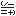

Public Static Fields
  DoubleFlat DoubleFlat | Double-flat accidental value. |
| DoubleSharp | Double-sharp accidental value. |
| Flat | Flat accidental value. |
| Natural | Natural accidental value. |
| Sharp | Sharp accidental value. |
Public Static Methods
 ParseNote ParseNote | Parses a Note from s, starting at position pos. |
Public Static Operators
| Equality Operator | Equality operator does value comparison. |
| Inequality Operator | Inequality operator does value comparison. |
Public Instance Constructors
|
Note
|
Overloaded. Initializes a new instance of the Note class. |
Public Instance Properties
 Accidental Accidental | The accidental for this note name. |
| Letter | The letter for this note name, in ['A'..'G']. |
| PositionInOctave | This note's position in the octave, where octaves start at each C. |
Public Instance Methods
| Equals | Value equality for Note. |
| GetHashCode | Hash code. |
| GetType (inherited from Object) | |
| IsEharmonicWith | Returns true if this note name is enharmonic with otherNote. |
| PitchAtOrAbove | Returns the pitch for this note that is at or above nearPitch. |
| PitchAtOrBelow | Returns the pitch for this note that is at or below nearPitch. |
| PitchInOctave | Returns the pitch for this note in the specified octave. |
| SemitonesDownTo | Returns the number of semitones it takes to move down to the next otherNote. |
| SemitonesUpTo | Returns the number of semitones it takes to move up to the next otherNote. |
| ToString | ToString returns the note name. |
Protected Instance Methods
 Finalize (inherited from Object) Finalize (inherited from Object) | |
| MemberwiseClone (inherited from Object) |